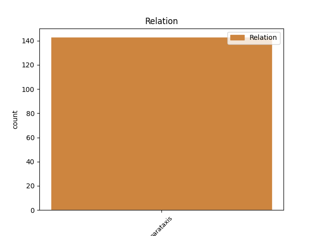
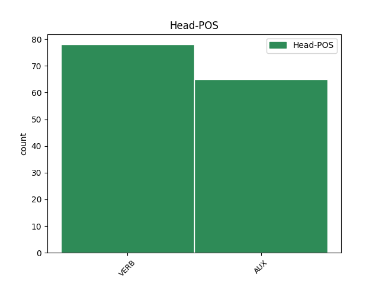
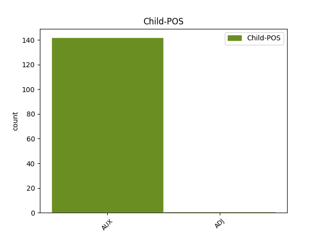

Distribution of features within this leaf



Agreement Rules sorted by frequency.
- When the dependent token is the parataxis(parataxis) of the head token, and the dependent token is AUX.
1 Die _ _ _ _ 0 _ _ _
2 Spiele _ _ _ _ 0 _ _ _
3 fanden finden VERB VVFIN Mood=Ind|Number=Plur|Person=3|Tense=Past|VerbForm=Fin 0 _ _ _
4 an _ _ _ _ 0 _ _ _
5 drei _ _ _ _ 0 _ _ _
6 Tagen _ _ _ _ 0 _ _ _
7 in _ _ _ _ 0 _ _ _
8 Helsinki _ _ _ _ 0 _ _ _
9 statt _ _ _ _ 0 _ _ _
10 , _ _ _ _ 0 _ _ _
11 nur _ _ _ _ 0 _ _ _
12 das _ _ _ _ 0 _ _ _
13 erste _ _ _ _ 0 _ _ _
14 Spiel _ _ _ _ 0 _ _ _
15 der _ _ _ _ 0 _ _ _
16 russischen _ _ _ _ 0 _ _ _
17 Mannschaft _ _ _ _ 0 _ _ _
18 wurde werden AUX VAFIN Mood=Ind|Number=Sing|Person=3|Tense=Past|VerbForm=Fin|Voice=Pass 3 parataxis _ _
19 in _ _ _ _ 0 _ _ _
20 Moskau _ _ _ _ 0 _ _ _
21 ausgetragen _ _ _ _ 0 _ _ _
22 . _ _ _ _ 0 _ _ _
Disagree Examples:
1 Wir _ _ _ _ 0 _ _ _
2 haben haben AUX VAFIN Mood=Ind|Number=Plur|Person=1|Tense=Pres|VerbForm=Fin 0 _ _ _
3 uns _ _ _ _ 0 _ _ _
4 mehrfach _ _ _ _ 0 _ _ _
5 bei _ _ _ _ 0 _ _ _
6 dem _ _ _ _ 0 _ _ _
7 Personal _ _ _ _ 0 _ _ _
8 beschwert _ _ _ _ 0 _ _ _
9 -- _ _ _ _ 0 _ _ _
10 das _ _ _ _ 0 _ _ _
11 Bett _ _ _ _ 0 _ _ _
12 wurde werden AUX VAFIN Mood=Ind|Number=Sing|Person=3|Tense=Past|VerbForm=Fin|Voice=Pass 2 parataxis _ _
13 zwar _ _ _ _ 0 _ _ _
14 mit _ _ _ _ 0 _ _ _
15 einer _ _ _ _ 0 _ _ _
16 weiteren _ _ _ _ 0 _ _ _
17 Matraze _ _ _ _ 0 _ _ _
18 ausgestattet _ _ _ _ 0 _ _ _
19 aber _ _ _ _ 0 _ _ _
20 das _ _ _ _ 0 _ _ _
21 hat _ _ _ _ 0 _ _ _
22 nix _ _ _ _ 0 _ _ _
23 gebracht _ _ _ _ 0 _ _ _
24 . _ _ _ _ 0 _ _ _
1 Das _ _ _ _ 0 _ _ _
2 Schwimmbad _ _ _ _ 0 _ _ _
3 war sein AUX VAFIN Mood=Ind|Number=Sing|Person=3|Tense=Past|VerbForm=Fin 0 _ _ _
4 an _ _ _ _ 0 _ _ _
5 den _ _ _ _ 0 _ _ _
6 beiden _ _ _ _ 0 _ _ _
7 Regentagen _ _ _ _ 0 _ _ _
8 ein _ _ _ _ 0 _ _ _
9 Segen _ _ _ _ 0 _ _ _
10 , _ _ _ _ 0 _ _ _
11 abends _ _ _ _ 0 _ _ _
12 haben haben AUX VAFIN Mood=Ind|Number=Plur|Person=3|Tense=Pres|VerbForm=Fin 3 parataxis _ _
13 mein _ _ _ _ 0 _ _ _
14 MAnn _ _ _ _ 0 _ _ _
15 und _ _ _ _ 0 _ _ _
16 ich _ _ _ _ 0 _ _ _
17 gerne _ _ _ _ 0 _ _ _
18 auch _ _ _ _ 0 _ _ _
19 die _ _ _ _ 0 _ _ _
20 Sauna _ _ _ _ 0 _ _ _
21 in _ _ _ _ 0 _ _ _
22 der _ _ _ _ 0 _ _ _
23 Wohnung _ _ _ _ 0 _ _ _
24 benutzt _ _ _ _ 0 _ _ _
25 . _ _ _ _ 0 _ _ _
1 Dieses _ _ _ _ 0 _ _ _
2 kleine _ _ _ _ 0 _ _ _
3 aber _ _ _ _ 0 _ _ _
4 feine _ _ _ _ 0 _ _ _
5 Hotel _ _ _ _ 0 _ _ _
6 bietet bieten VERB VVFIN Mood=Ind|Number=Sing|Person=3|Tense=Pres|VerbForm=Fin 0 _ _ _
7 sehr _ _ _ _ 0 _ _ _
8 schöne _ _ _ _ 0 _ _ _
9 Zimmer _ _ _ _ 0 _ _ _
10 , _ _ _ _ 0 _ _ _
11 das _ _ _ _ 0 _ _ _
12 Badezimmer _ _ _ _ 0 _ _ _
13 war sein AUX VAFIN Mood=Ind|Number=Sing|Person=3|Tense=Past|VerbForm=Fin 6 parataxis _ _
14 nahezu _ _ _ _ 0 _ _ _
15 neu _ _ _ _ 0 _ _ _
16 und _ _ _ _ 0 _ _ _
17 somit _ _ _ _ 0 _ _ _
18 in _ _ _ _ 0 _ _ _
19 einem _ _ _ _ 0 _ _ _
20 tadellosen _ _ _ _ 0 _ _ _
21 Zustand _ _ _ _ 0 _ _ _
22 . _ _ _ _ 0 _ _ _
1 Bei _ _ _ _ 0 _ _ _
2 meinem _ _ _ _ 0 _ _ _
3 ersten _ _ _ _ 0 _ _ _
4 Termin _ _ _ _ 0 _ _ _
5 wurde werden AUX VAFIN Mood=Ind|Number=Sing|Person=3|Tense=Past|VerbForm=Fin|Voice=Pass 0 _ _ _
6 mir _ _ _ _ 0 _ _ _
7 alles _ _ _ _ 0 _ _ _
8 erklärt _ _ _ _ 0 _ _ _
9 , _ _ _ _ 0 _ _ _
10 ich _ _ _ _ 0 _ _ _
11 habe haben AUX VAFIN Mood=Ind|Number=Sing|Person=1|Tense=Pres|VerbForm=Fin 5 parataxis _ _
12 einen _ _ _ _ 0 _ _ _
13 persönlichen _ _ _ _ 0 _ _ _
14 Trainingsplan _ _ _ _ 0 _ _ _
15 bekommen _ _ _ _ 0 _ _ _
16 und _ _ _ _ 0 _ _ _
17 mir _ _ _ _ 0 _ _ _
18 wurden _ _ _ _ 0 _ _ _
19 die _ _ _ _ 0 _ _ _
20 Geräte _ _ _ _ 0 _ _ _
21 gezeigt _ _ _ _ 0 _ _ _
22 . _ _ _ _ 0 _ _ _
1 Ich _ _ _ _ 0 _ _ _
2 hab haben AUX VAFIN Mood=Ind|Number=Sing|Person=1|Tense=Pres|VerbForm=Fin 0 _ _ _
3 vor _ _ _ _ 0 _ _ _
4 4 _ _ _ _ 0 _ _ _
5 Wochen _ _ _ _ 0 _ _ _
6 unsere _ _ _ _ 0 _ _ _
7 Fahrräder _ _ _ _ 0 _ _ _
8 zu _ _ _ _ 0 _ _ _
9 der _ _ _ _ 0 _ _ _
10 Reparatur _ _ _ _ 0 _ _ _
11 gebracht _ _ _ _ 0 _ _ _
12 , _ _ _ _ 0 _ _ _
13 es _ _ _ _ 0 _ _ _
14 war sein AUX VAFIN Mood=Ind|Number=Sing|Person=3|Tense=Past|VerbForm=Fin 2 parataxis _ _
15 einiges _ _ _ _ 0 _ _ _
16 zu _ _ _ _ 0 _ _ _
17 machen _ _ _ _ 0 _ _ _
18 . _ _ _ _ 0 _ _ _